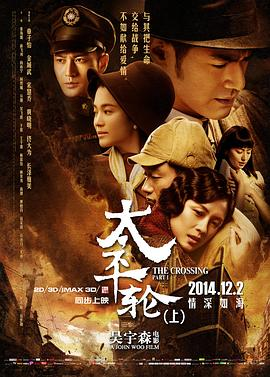

太平轮(上)
又名：太平轮I：乱世浮生(台) / 生死恋 / 1949 / The Crossing : Part 1
很烂，烂到金城武和长泽雅美都拯救不了
作品信息
| 导演 | 吴宇森 |
| 编剧 | 王蕙玲 / 苏照彬 / 陈静慧 |
| 主演 | 章子怡 / 金城武 / 宋慧乔 / 黄晓明 / 佟大为 / 长泽雅美 / 秦海璐 / 俞飞鸿 / 杨祐宁 / 杨贵媚 / 丛珊 / 吴飞霞 / 于震 / 王千源 / 林保怡 / 林美秀 / 高捷 / 黄柏钧 / 寇家瑞 / 许还幻 / 尤勇智 / 刘仪伟 / 黑木瞳 / 寇世勋 / 侯勇 |
| 类型 | 剧情 / 爱情 / 战争 |
| 制片国家/地区 | 中国大陆 / 中国香港 |
| 语言 | 汉语普通话 / 日语 / 闽南语 / 上海话 |
| 上映日期 | 2014-12-02(中国大陆) / 2014-12-25(中国香港) |
| 片长 | 129分钟 |
| IMDb | tt2150371 |
最后一次看到是 2026-08-12T21:13:00+08:00 · 豆瓣原页